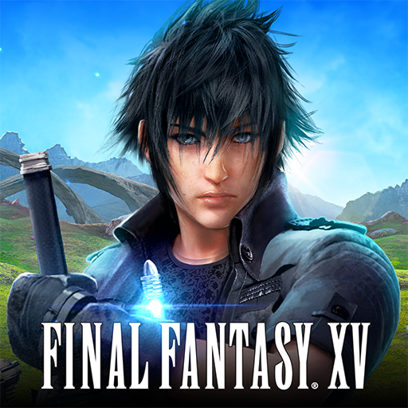
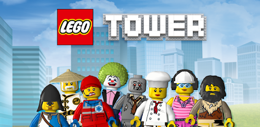
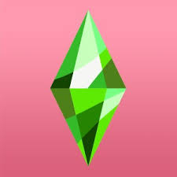
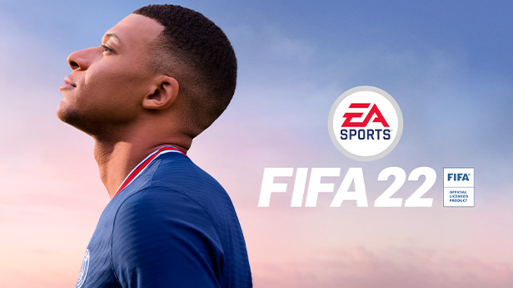
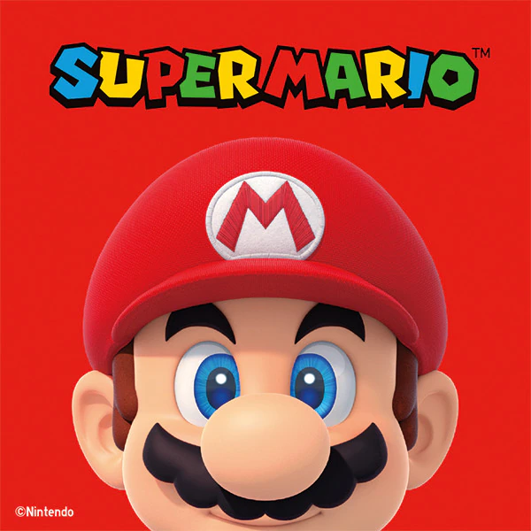
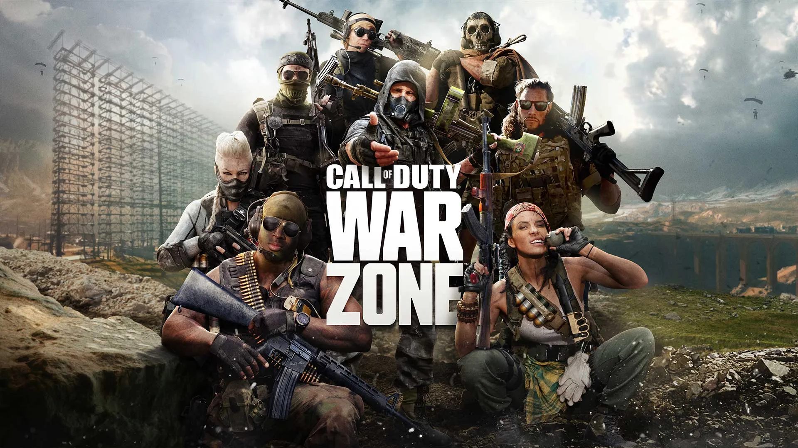

9.lego
(200 miljoni vienību): kopš 1995. gada videospēļu franšīzes ietvaros ir izlaistas vairāk nekā 75 spēles, kuru pamatā ir populārais privātais rotaļlietu uzņēmums. Jaunākās izdotās spēļu versijas ietver tās, kuru pamatā ir Harija Potera, Zvaigžņu karu un Lego filmu franšīzes, un tās izdod Warner Bros.

8.Tie-The Sims
(200 miljoni vienību): 2000. gadā izlaists The Sims ir redzējis vairākas spēles versijas un vairākas paplašināšanas pakotnes. Spēlētāji var kontrolēt varoņus izdomātā mājā. Spēļu franšīze ir izlaista no Electronic Arts un darbojas kā SimCity sērijas papildinājums.

7.Minecraft
(238 miljoni vienību): Sākotnēji 2009. gadā izlaida Mojang Studios, populārākā Minecraft versija tika izlaista 2011. gadā. Mojang Studios Microsoft iegādājās par 2,5 miljardiem ASV dolāru 2014. gadā.
6.FIFA
(325 miljoni vienību): Visvairāk pārdotā sporta videospēļu franšīze ir FIFA, ko tagad izlaidusi Electronic Arts Inc (NASDAQ:EA). Ikgadējā spēlē piedalās starptautiskas un klubu komandas, un to var spēlēt tiešsaistē savstarpējās cīņās. Spēļu franšīze pat ir radījusi esporta līgu. Franšīze ir piedzīvojusi ikgadējus izlaidumus kopš 1993. gada.

5.Grand Theft Auto
(355 million units): Dating back to 1997, the Grand Theft Auto franchise has seen several versions of the game released and multiple expansion packs. The franchise remains one of the most popular even now, with Grand Theft Auto V selling 155 million copies and remaining a top title for gamers and streamers. The game has also led to the successful launch of Grand Theft Auto Online from owner Take-Two Interactive Software
4.Pokemon
(386 miljoni vienību): Pokemon videospēļu franšīze galvenokārt ir ekskluzīva Nintendo, kam arī pieder daļa The Pokemon Company. Franšīze aizsākās ar Pokemon spēlēm Nintendo GameBoy 1996. gadā, un tā joprojām ir spēcīga ar vairākām spēlēm, kas tika izlaistas Nintendo Switch 2021. un 2022. gadā.
3.Super Mario
(387,7 miljoni vienību): Nintendo Co (OTC: NTDOY) Super Mario franšīzē ir pieejamas vairāk nekā 20 spēles vairākās konsolēs. Saskaitot Super Mario un Mario spēles, franšīze kļūst par pirmo vietu ar 740 miljoniem pārdotu vienību, liecina The Gamer ziņojums. Pamatojoties tikai uz Super Mario spēlēm, franšīze ieņem trešo vietu visu laiku.

2.Call of Duty
(400 miljoni vienību): Activision Blizzard (NASDAQ:ATVI) tituls ir bijis galvenais naudas ieguvējs un svarīga Activision izaugsmes sastāvdaļa, un katru gadu tiek izdots jauns izlaidums aizņemtajā brīvdienu iepirkšanās sezonā. Activision nesen paziņoja, ka tā atliks savu 2023. gada Call of Duty izlaišanu uz 2024. gadu, kas ir pirmā reize, kad spēle franšīzes ietvaros netika izlaista gada laikā kopš 2005. gada. Microsoft Corp (NASDAQ:MSFT) nesen paziņoja par plāniem iegādāties Activision Blizzard. , kas izraisīja spekulācijas, ka Call of Duty varētu kļūt ekskluzīvs Xbox konsolēm, kas saskaņā ar ziņojumiem nav iekļauts uzņēmuma tuvākajos plānos.

1.Tetris
(496,4 miljoni vienību): bloku puzzle spēle ir visu laiku visvairāk pārdotā videospēle. Spēles franšīzei tika pārdotas vairākas versijas pēc pirmās izlaišanas 1980. gados. Ikoniskā spēle ir parādīta konsolēs Sega, Atari, Playstation, Xbox un Nintendo konsolēm, kā arī datora versijām. Tetris sadarbojas ar Playstudios Inc (NASDAQ: MYPS) spēles mobilajai versijai.